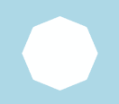
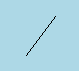
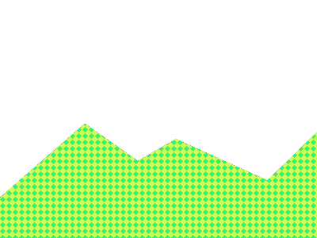
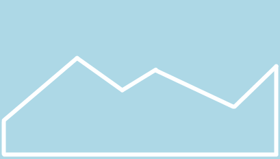
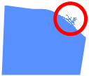
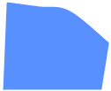

Muodot¶
Oliolle voidaan asettaa muoto. Jypelissä olevia muotoja ovat ympyrä, suorakulmio, kolmio, sydän, tähti, jana sekä erilaiset monikulmiot. Lisäksi muodon voi tehdä kuvaan perustuvasti.
Tehdään nyt uusi fysiikkaolio, jonka leveys on 100 ja korkeus on 50.
Muista myös tarvittaessa lisätä olio kentälle:
Kokeillaan nyt asettaa olio-muuttujalle erilaisia muotoja.
Tässä voit kokeilla erilaisia muotoja. Vaihda esimerkin Shape.Circle tilalle muita muotoja.
using Jypeli;
public class Peli : PhysicsGame
{
public override void Begin()
{
Level.Background.Color = Color.Black;
PhysicsObject olio = new PhysicsObject(100,50);
olio.Shape = Shape.Circle;
olio.Color = Color.Red;
Add(olio);
Camera.Zoom(2.0);
}
}
1. Ympyrä¶
Ympyrä on pyöreä muoto, jolla on säde ja halkaisija. Ympyrän halkaisija (leveys ja korkeus) on 2 * säteen pituus.
Tässä tapauksessa oliostamme tulee ympyrä, jonka halkaisija on 100 (eli menee leveyden mukaan). Olio ei kuitenkaan näytä ympyrältä, vaikka se oikeasti onkin sen muotoinen, koska sen leveys on suurempi kuin korkeus.
Jos oliosta haluaa myös ympyrän näköisen, leveys ja korkeus tulee asettaa yhtä suuriksi!
2. Suorakulmio¶
Suorakulmiolla on leveys ja korkeus. Oliosta tulee suorakulmion muotoinen. Sen leveys ja korkeus ovat ne, jotka olion luonnissa sille määriteltiin.
Oletuksena oliot ovat juuri suorakulmion muotoisia, eli tätä muotoa ei erikseen tarvitse asettaa.
3. Kolmio¶
Kolmio tekee oliostamme tasakylkisen kolmion. Kolmion kanta on asettamamme leveyden pituinen. Kolmion kärki on laskettu kannan keskikohdasta asettamamme korkeuden päähän. Tasakylkisyys tarkoittaa sitä, että kantaa lukuun ottamatta kolmion kaksi muuta sivua ovat yhtä pitkät.
4. Sydän¶
5. Tähti¶
6. Monikulmiot¶
Jypelin muodoissa on olemassa valmiiksi joitain tavallisimpia monikulmioita:
olio.Shape = Shape.Octagon; // kahdeksankulmio
olio.Shape = Shape.Hexagon; // kuusikulmio
olio.Shape = Shape.Pentagon; // viisikulmio

Erilaisia säännöllisiä monikulmioita voi tehdä myös itse antamalla halutun määrän kulmia CreateRegularPolygon-aliohjelmalle:
7. Jana (eli "säde")¶
Janat tehdään Jypelissä muista muodoista hieman poikkeavasti. Jana tehdään RaySegment-oliolla. RaySegment on viiva, jolla on alkupiste, suunta ja pituus.
RaySegment-muodon käytös poikkeaa hieman muista muodoista. Se ei mm. voi pyöriä.
RaySegment r = new RaySegment(new Vector(0, 0), new Vector(30, 40), 1);
PhysicsObject p = new PhysicsObject(r);
p.Color = Color.Black;

8. Muodon luominen kuvasta¶
Muoto voidaan luoda kuvan perusteella:

Esimerkki kuvasta, josta muoto luetaan.

Kuvasta luettu muoto (sininen tausta on pelin "vakiotausta", eikä sinänsä liity varsinaiseen kuvaan).
9. Huomioita muodon luomiseen kuvasta¶
9.1. Tee kuvasta mahdollisimman pieni¶
Mitä enemmän kuvassa on pikseleitä, sitä enemmän olion luominen ja käsittely rasittaa tietokonetta. Jos kuvaan perustuvia olioita luodaan pelin aikana paljon, on suositeltavaa, että kuvan leveys on enintään 128 pikseliä ja korkeus 128 pikseliä – mielellään vähemmän.
Mitä tapahtuu, kun kuvassa on "liikaa" pikseleitä? Katso video:
9.2. Viimeistele (eli optimoi) koodi¶
Muodon lukeminen kuvasta on melko hidas operaatio. Kannattaa luoda muoto pelin alussa ja laittaa kuvio talteen muuttujaan, kuten seuraavassa esimerkissä on tehty:
using System;
using Jypeli;
public class Peli : PhysicsGame
{
Image maastonKuva = LoadImage( "maasto" );
Shape maastonMuoto;
protected override void Begin()
{
maastonMuoto = Shape.FromImage( maastonKuva );
LuoKentta();
}
void LuoKentta()
{
PhysicsObject maasto = PhysicsObject.CreateStaticObject( 400, 300, maastonMuoto );
maasto.Image = maastonKuva;
Add( maasto );
}
}
9.3. Tee reunat tasaisiksi¶
Katsothan, että kuvan reunat ovat mahdollisimman tasaisia. Jos kuvion reunalla näkyy ylimääräistä "röpelöä", pyyhi se pois.

EI HYVÄ.
HYVÄ.